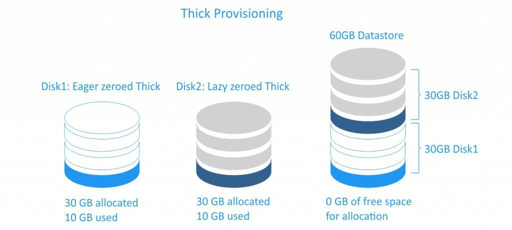

概述
起因是这样的，通过RVtools导出的虚拟机信息中，disk in use字段总和与vcenter中看到的磁盘占用量不相等，且差值超过了10T。研究到最后发现是虚机磁盘精简置备的问题。
Thick and Thin Provisioning: What Is the Difference?
厚置备
当虚拟机磁盘采用厚置备模式，完整的空间会直接分配给虚拟机，被分配出去的空间不能再被其他虚拟机使用了，并且厚置备也分两种模式。
- 厚置备延迟置零（Lazy zeroed disk）
这种类型的厚置备磁盘会把完整的空间分配给虚拟机，但是磁盘空间上可能会存在还没有被清零的旧数据。当虚拟机需要往磁盘上写数据的时候，需要先把磁盘清零，再做写操作。从创建时间上来说，Lazy zeroed disk比Eager zeroed disk更快，但是从使用角度来看，Eager zeroed disk读写性能会比Eager zeroed disk差一点，因为它需要先做清零的动作。
- 厚置备置零（Eager zeroed disk）
这种类型的厚置备磁盘会把完整的空间分配给虚拟机，并且会直接把磁盘上的旧数据清楚干净，相对Lazy zeroed disk，创建起来会慢一些但是performance会更好。

精简置备
就是俗称的超分配，在虚机需要空间的时候再去增长空间。因为可以超分配空间，且磁盘上占据空间为实际数据落盘空间，所以对于想节省存储空间来说这个模式很好用。性能上来说会比任意一种厚置备都差。
当你从精简置备的虚机上删除数据的时候，硬盘上的数据并没有被删除，只是删除了指向实际数据的index，所以通过RVtools导出的disk in use会比较大，因为磁盘上的数据尚未删除，但是这部分磁盘已经被datastore标记为free了，是可分配出去的磁盘，所以从vcenter上看到datastore的数据已经被释放了。
对于精简置备来说，虽然可以超分配，但是超分配也容易带来问题，举个例子，你有一块20G的存储，和三台虚机，每台虚机以精简置备的方式分配了10G的空间，当20G的存储被写满时，这三台精简置备的虚机都会挂掉，如果想要恢复那必须将机器迁移到其他存储上才行。所以最佳实践来说vcenter虚机需要和其他业务虚机放在分开的存储上，万一业务存储挂了，那vcenter不受影响，可以继续登录并管理虚机集群。
另外，精简置备的机器可以在虚机上删除文件后，将不使用的磁盘部分shrink出来，具体方法可以参考上文的链接，个人觉得对数据有风险，所以没有操作过。